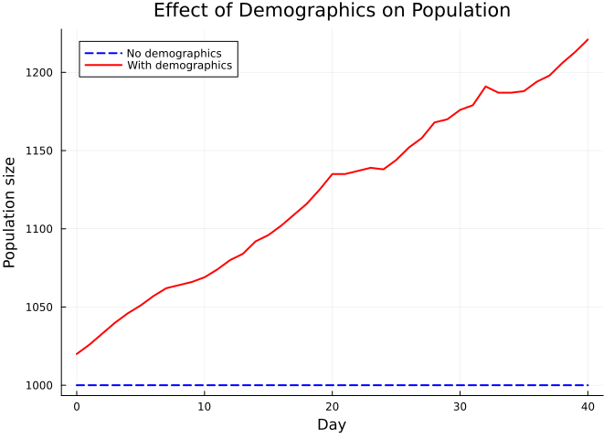
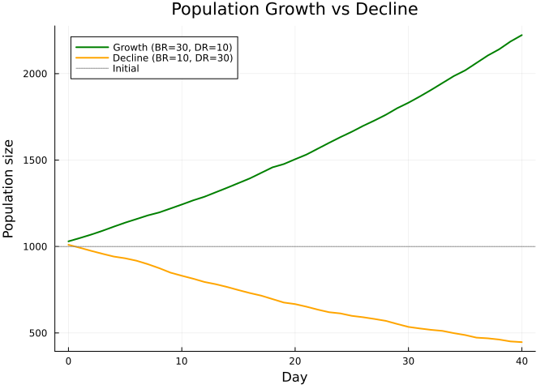
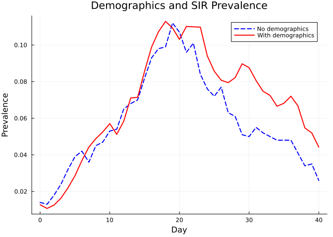
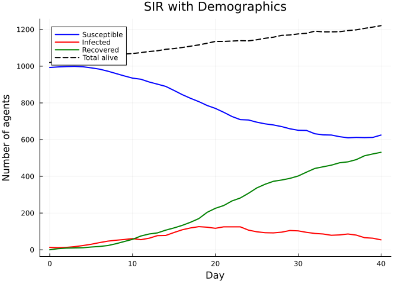

Demographics
Simon Frost
- Overview
- A simulation without demographics
- Adding births and deaths
- Visualizing population change
- Population growth vs decline
- Impact of demographics on disease dynamics
- Epidemic curves with demographics
- Summary
Overview
This vignette demonstrates how to add demographic processes — births, deaths, and aging — to a Starsim.jl simulation. Demographics change the population size over time and interact with disease dynamics in important ways: new births introduce susceptible individuals, while deaths remove agents regardless of disease state.
A simulation without demographics
First, let’s run a baseline SIR model without demographics for comparison:
using Starsim
using Plots
n_contacts = 10
beta = 0.5 / n_contacts
sim_base = Sim(
n_agents = 1_000,
networks = RandomNet(n_contacts=n_contacts),
diseases = SIR(beta=beta, dur_inf=4.0, init_prev=0.01),
dt = 1.0,
stop = 40.0,
rand_seed = 42,
verbose = 0,
)
run!(sim_base)
n_alive_base = get_result(sim_base, :n_alive)
println("Population (no demographics): $(Int(n_alive_base[1])) → $(Int(n_alive_base[end]))")Population (no demographics): 1000 → 1000Adding births and deaths
The Births and Deaths modules add demographic processes. Rates are specified per 1,000 people per year.
sim_demo = Sim(
n_agents = 1_000,
networks = RandomNet(n_contacts=n_contacts),
diseases = SIR(beta=beta, dur_inf=4.0, init_prev=0.01),
demographics = [Births(birth_rate=20.0), Deaths(death_rate=15.0)],
dt = 1.0,
stop = 40.0,
rand_seed = 42,
verbose = 0,
)
run!(sim_demo)
n_alive_demo = get_result(sim_demo, :n_alive)
println("Population (with demographics): $(Int(n_alive_demo[1])) → $(Int(n_alive_demo[end]))")Population (with demographics): 1020 → 1221Visualizing population change
tvec_base = 0:length(n_alive_base)-1
tvec_demo = 0:length(n_alive_demo)-1
plot(tvec_base, n_alive_base, label="No demographics", lw=2, color=:blue, ls=:dash)
plot!(tvec_demo, n_alive_demo, label="With demographics", lw=2, color=:red)
xlabel!("Day")
ylabel!("Population size")
title!("Effect of Demographics on Population")
Population growth vs decline
When the birth rate exceeds the death rate, the population grows. When the death rate exceeds the birth rate, the population declines.
# Growing population
sim_grow = Sim(
n_agents = 1_000,
networks = RandomNet(n_contacts=n_contacts),
diseases = SIR(beta=beta, dur_inf=4.0, init_prev=0.01),
demographics = [Births(birth_rate=30.0), Deaths(death_rate=10.0)],
dt = 1.0,
stop = 40.0,
rand_seed = 42,
verbose = 0,
)
run!(sim_grow)
# Declining population
sim_decline = Sim(
n_agents = 1_000,
networks = RandomNet(n_contacts=n_contacts),
diseases = SIR(beta=beta, dur_inf=4.0, init_prev=0.01),
demographics = [Births(birth_rate=10.0), Deaths(death_rate=30.0)],
dt = 1.0,
stop = 40.0,
rand_seed = 42,
verbose = 0,
)
run!(sim_decline)
n_grow = get_result(sim_grow, :n_alive)
n_decline = get_result(sim_decline, :n_alive)
tvec_g = 0:length(n_grow)-1
tvec_d = 0:length(n_decline)-1
plot(tvec_g, n_grow, label="Growth (BR=30, DR=10)", lw=2, color=:green)
plot!(tvec_d, n_decline, label="Decline (BR=10, DR=30)", lw=2, color=:orange)
hline!([1000], label="Initial", lw=1, ls=:dot, color=:gray)
xlabel!("Day")
ylabel!("Population size")
title!("Population Growth vs Decline")
Impact of demographics on disease dynamics
Demographics affect disease dynamics because newborns enter as susceptible and deaths remove agents from all compartments.
prev_base = get_result(sim_base, :sir, :prevalence)
prev_demo = get_result(sim_demo, :sir, :prevalence)
tvec_b = 0:length(prev_base)-1
tvec_d = 0:length(prev_demo)-1
plot(tvec_b, prev_base, label="No demographics", lw=2, color=:blue, ls=:dash)
plot!(tvec_d, prev_demo, label="With demographics", lw=2, color=:red)
xlabel!("Day")
ylabel!("Prevalence")
title!("Demographics and SIR Prevalence")
Epidemic curves with demographics
n_sus = get_result(sim_demo, :sir, :n_susceptible)
n_inf = get_result(sim_demo, :sir, :n_infected)
n_rec = get_result(sim_demo, :sir, :n_recovered)
tvec = 0:length(n_sus)-1
plot(tvec, n_sus, label="Susceptible", lw=2, color=:blue)
plot!(tvec, n_inf, label="Infected", lw=2, color=:red)
plot!(tvec, n_rec, label="Recovered", lw=2, color=:green)
plot!(tvec, n_alive_demo, label="Total alive", lw=2, color=:black, ls=:dash)
xlabel!("Day")
ylabel!("Number of agents")
title!("SIR with Demographics")
Summary
Births(birth_rate=...)andDeaths(death_rate=...)add demographic turnover- Rates are per 1,000 people per year
- Newborns enter as susceptible, replenishing the susceptible pool
- Deaths remove agents from any compartment
- The balance between birth and death rates determines population trajectory